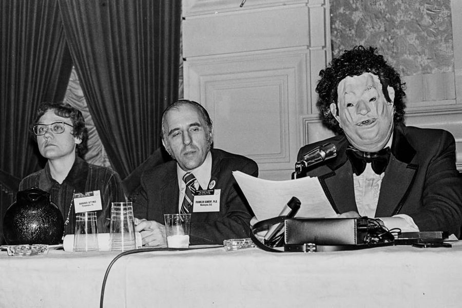

Mobile uploads
In 1972, Dr. John Fryer (right) gave a speech in this mask stating that homosexuality was not a mental disorder.
Dr. Fryer was a psychiatrist and gay. Admitting that he was gay would have admitted that he had a mental disorder and therefore would have lost his license.
May 2 was the 50th anniversary of the Dr. Anonymous speech. Philadelphia has declared May 2 John Fryer Day.
What makes this so powerful to me is how terrified he was to do this. He had so much to lose. BUT HE DID IT ANYWAY.
I'm always in awe of people that take stands that are at great risks to themselves. All the people who protected Jews in Nazi Germany, for example.
Without these people the wrongs of society would never be corrected.
I am often confronted by people who try to terrify me into stopping the work I do with homeless people. They are the reality instructors who use fear and logic to attempt to convince me to sit down and stop making waves.
There is no scenario where leaving hundreds of thousands of Americans on the streets of our cities with no access to toilets, running water or trash service makes any sense morally, philosophically or systematically. Yet homeless service providers tell me I am enabling them by giving them those services. And the reality instructors are telling me I'm risking too much by taking care of these people. (I'm not doing it the right way, they both like to tell me.)
Just as Dr. Fryer was considered mentally ill for being gay, some homeless people are considered criminals for having a brain disease we call addiction. We are not allowed to help anyone who doesn't first solve their addiction.
It is madness to think being gay is a mental illness. It is madness to think that addiction is considered a moral failing so terrible that we must not give a homeless person something as basic as a toilet, because doing so is just enabling them to continue their weak-minded, amoral, lazy lifestyle of a no-good drug addict. Which mind you, while this is the belief of homeless service providers and the government, it is nowhere near the reality of the situation. Drug addition DOES NOT cause homelessness. And no. Not all homeless people are drug addicts.
My only regret is that I cannot do more and that I cannot bring emergency change to these hated Americans faster.
I'm thankful for people like Dr. Fryer who risked so much. Our world would be so much more cruel and backwards without people like him.